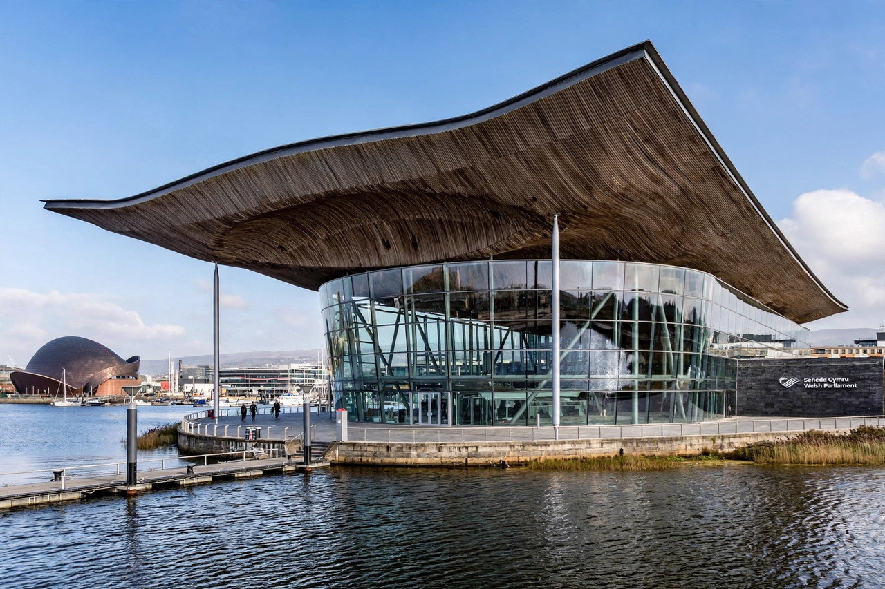

Senedd Cymru
| Senedd Cymru / Welsh Parliament | |
|---|---|
| Established | 1999 (as National Assembly for Wales) |
| Seats | 60 Members of the Senedd (MSs) |
| Meeting place | Senedd building, Cardiff Bay |
Senedd Cymru (English: Welsh Parliament) is the devolved, unicameral legislature of Wales. Created following the 1997 devolution referendum, it first sat in 1999 as the National Assembly for Wales and gained primary law-making powers in 2011. It was renamed Senedd Cymru in 2020.

Powers
The Senedd legislates in devolved areas including health, education, local government, transport and the Welsh language. Its 60 Members of the Senedd (MSs) are elected by the Additional Member System: 40 from constituencies and 20 from five regional lists.
Senedd building
The landmark Senedd building in Cardiff Bay, designed by Richard Rogers Partnership and opened in 2006, features a dramatic curved roof of western red cedar and extensive use of Welsh slate, symbolising openness and transparency in government.